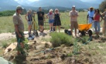

|
School of the Future
Running through July 31st in Brooklyn, NY classes are free and open to the public. Check out the schedule here.
|
|
WOMAD Festival, July 23rd
Bringing together artists from all over the globe, the central aim of the WOMAD festival is to celebrate the world's many forms of music, arts and dance. More info here.
|
|
Westcliffe Permaculture
A two week residential course leading to a certification in Permaculture Design. July 26 - August 7, 2010. Westcliffe, Colorado. Register here.
|
|
Bucky Fuller & Spaceship Earth
Curated by Norman Foster and Luis Fernández-Galiano. September 1 - October 30th, 2010. Ivorypress Art + Books. Madrid, Spain.
|